1 | // es6语法，将数组第一项移到最后一项 |
PHP 类型声明和强类型声明
一、类型声明 及 返回值类型声明
| 类型声明 | 起始版本 | 说明 |
|---|---|---|
| array | 5.1 | 数组，默认值可以是null或数组 |
| int | 7.0 | 整数值，默认值可以是null或整数 |
| float | 7.0 | 浮点数值（一个带小数点的数值）。即使开启了严格模式，也可以接受整数。默认值可以是null、浮点类型或整数 |
| callable | 5.4 | 可调用代码（如匿名函数），默认值可以是null |
| bool | 7.0 | 布尔值，默认值可以是null或布尔值 |
| string | 5.0 | 字符数据，默认值可以是null或字符串 |
| self | 5.0 | 字符数据，指向自己的引用 |
| [类类型] | 5.0 | 类或接口的类型，默认值可以是null |
| void | 7.1 | 只用于返回值类型声明，不可用于参数类型声明，否则报错强类型检查模式下定义返回类型为 void 的方法不能有返回值，即使返回 null 也不行；或者使用一个空的 return 语句 |
使用：
1 | class A |
可空类型声明
可空类型主要用于参数类型声明和函数返回值声明
形式分以下两种：
1 | function a(): ?int { |
意思为：所指的就是通过 ? 的形式表明函数参数或者返回值的类型要么为指定类型，要么为 null。
此方法也可用于接口函数的定义：
1 | interface A{ |
但有一个需要注意的地方：如果函数本身定义了参数类型并且没有默认值，即使是可空的，也不能省略，否则会触发错误。如下：
1 | function a(?Bar $bar) {} |
但是如果以上函数的参数定义为 ?Bar $bar = null 的形式，则第三种写法也是可行的。因为 = null 实际上相当于 ? 的超集，对于可空类型的参数，可以设定 null 为默认值。
类函数中对于返回类型的声明也不能被子类覆盖，否则会触发错误：
1 | class A |
强类型声明（严格校验模式）
- 默认情况下，所有的PHP文件都处于弱类型校验模式，弱类型校验模式下如果参数不符合声明类型，将会按照php的规则进行转换。
- 通过指定strict_types的值（1或者0），1表示严格类型校验模式，作用于函数调用和返回语句；0表示弱类型校验模式。
- declare(strict_types=1)必须是文件的第一个语句。如果这个语句出现在文件的其他地方，将会产生一个编译错误，块模式是被明确禁止的。
- strict_types指令只影响指定使用的文件，不会影响被它包含（通过include等方式）进来的其他文件。该指令在运行时编译，不能修改。它的运作方式，是在opcode中设置一个标志位，让函数调用和返回类型检查符合类型约束。
以下代码会被按照php的规则转换：
1 | class A |
但如果在文件第一行加上 declare(strict_types=1);
便会开启严格效验模式
1 |
|
内聚类型 与 耦合类型（举例说明）
理解内聚与耦合
https://www.cnblogs.com/jiuhefree/articles/13725621.html
内聚类型：（低 –> 高）
1、偶然内聚
模块的各成分之间没有关联，只是把分散的功能合并在一起。
例：A模块中有三条语句（一条赋值，一条求和，一条传参），表面上看不出任何联系，但是B、C模块中都用到了这三条语句，于是将这三条语句合并成了模块A。模块A中就是偶然内聚。
2、逻辑内聚
逻辑上相关的功能被放在同一模块中。
例：A模块实现的是将对应的人员信息发送给技术部，人事部和财政部，决定发送给哪个部门是输入的控制标志决定的。模块A中就是逻辑内聚。
3、时间内聚
模块完成的功能必须在同一时间内执行，但这些功能只是因为时间因素才有关联。
例：编程开始时，程序员把对所有全局变量的初始化操作放在模块A中。模块A中就是时间内聚。
4、过程内聚
模块内部的处理成分是相关的，而且这些处理必须以特定的次序进行执行。
例：用户登陆了某某网站，A模块负责依次读取用户的用户名、邮箱和联系方式，这个次序是事先规定的，不能改变。模块A中就是过程内聚。
5、通信内聚
模块的所有成分都操作同一数据集或生成同一数据集。
例：模块A实现将传入的Date类型数据转换成String类型，以及将Date类型数据插入数据库，这两个操作都是对“Date类型数据”而言的。模块A中就是通信内聚。
6、顺序内聚
模块的各个成分和同一个功能密切相关，而且一个成分的输出作为另一个成分的输入。
例：模块A实现将传入的Date类型数据转换成String类型，然后再将转换好的String类型数据插入数据库。模块A中就是顺序内聚。
7、功能内聚
模块的所有成分对于完成单一的功能都是必须的。
例：模块A实现将新注册的用户信息（用户名，密码，个性签名）全部转换成String类型并插入数据库。模块A中就是功能内聚。
三、耦合类型：（高 –> 低）
1、内容耦合
一个模块直接修改或操作另一个模块的数据,或者直接转入另一个模块。
例：模块A中定义了变量a，在模块B中直接使用了。这种情况下模块A和模块B就是内容耦合。
2、公共耦合
两个以上的模块共同引用一个全局数据项。
例：定义了一个全局变量a，在A、B、C模块中均调用了a，这种情况下模块A、模块B、模块C就是公共耦合。
3、控制耦合
一个模块在界面上传递一个信号控制另一个模块，接收信号的模块的动作根据信号值进行调整。
例：模块A获取用户类型（普通用户、高级用户）传递给模块B，模块B根据不同类型的用户提供不同的服务。这种情况下模块A和模块B就是控制耦合。
4、标记耦合
模块间通过参数传递复杂的内部数据结构。
例：模块A向模块B传递Object类型的数据。这种情况下模块A和模块B就是标记耦合。
5、数据耦合
模块间通过参数传递基本类型的数据。
例：模块A实现两个数的加法操作，模块B实现两个加数的初始化，模块B将两个加数传给模块A，模块A进行相加。这种情况下模块A和模块B就是数据耦合。
6、非直接耦合
模块间没有信息传递。
例：模块A实现输出字符串，模块B实现接收int数据，两者之间没有信息传递。这种情况下模块A和模块B就是非直接耦合。
理解内聚与耦合
先了解一下什么是模块？
模块就是从逻辑上将系统分解为更细微的部分，分而治之。
复杂问题因为复杂性的问题，比较难解决，但是可以将复杂问题拆解为若干简单问题，逐个击破地解决这些简单问题，最后实现解决复杂问题的效果。
模块的粒度划分可大可小，可以是函数，类或功能块等等。
耦合主要描述的是模块与模块之间的关系，内聚则主要描述的是单个模块的内部构成。
模块独立性指每个模块只完成系统要求的独立子功能，并且与其他模块的联系最少且接口简单，两个定性的度量标准――耦合性和内聚性。
耦合
如果模块之间存在依赖，则可能会导致一个模块的改动影响了另外的模块的问题，甚至是相互影响。
两个模块之间的关系越紧密，耦合就越强，模块的独立性就会越差。
比如一个模块A直接操作了模块B中数据，则视为强耦合；若A只是通过数据与模块B交互，则视为弱耦合。
独立的模块便于扩展、维护和单元测试，如果模块之间重重依赖的话，就会极大降低开发效率。
内聚
一个模块应当尽可能独立完成某个功能，模块内部的元素关联性越强，则内聚越高，模块单一性就越强。
如果有各种场景需要被引入到当前模块，代码的质量将变得非常脆弱，这种情况建议拆分为多个模块。
低内聚的模块代码，不管是维护、扩展还是重构都相当麻烦。因为要兼顾内部元素的关联性，如果不理清楚的话可能会难以下手。
高内聚的优点：可读性、复用性、可维护性和易变更性
内聚类型 与 耦合类型（举例说明）
PHP MySQL 存储层级结构的两种方式 邻接表和MPTT
层级结构，也叫树形结构。在关系型数据库中保存树状结构数据，常用的方法有两种：
- 邻接表（Adjacency List）
- 修改过的前序遍历算法（MPTT）
要存储的树状结构数据图如下
表名：Food

邻接表

邻接表依赖于pid字段连接上下级。id为自增主键，pid为上一节点的id，例如：Apple的上一节点是Red，所以 Apple pid = Red id
打印树结构
1 | class Tree |
效果图

获取节点路径
1 | /** |
效果图

优点
简单易懂，写入效率较高
缺点
查询起来效率低下。我们对于每个结果，期望只需要一次查询；可是当使用邻接表模型时嵌套的递归使用了多次查询，当树很大的时候，这种慢就会表现得尤为明显。
修改过的前序遍历算法
原理
把“树”横着放，如图所示，根节点 ‘Food’ 左侧标记 ‘1’，然后 ‘Fruit’ 左侧标记2，接着按前序遍历的顺序遍历完树，依次在每个节点的左右侧标记数字

根据上图，改变数据表，增加 lft 和 rgt 两个字段用于存储左右数字（left和right是MySQL保留字，所以用简写）。

打印树结构
现在想要查看树结构只需一条SQL语句即可。比如，想要打印 ‘Fruit’ 的子树，可以查询左数大于2并且小于11的节点
1 | 1 select * from food where lft between 2 and 11; |
什么时候显示缩进？缩进多少单位？解决这个问题，需要使用堆栈，即后进先出（LIFO），每到一个节点，将其右边的数字压入堆栈中。我们知道，所有节点右边的值都比其父节点右边的值小，那么将当前节点右边的值和堆栈最上边的右边值进行比较，如果当前节点比堆栈最上边的值小，表示当前堆栈里边剩下的都是父节点了，这时可以显示缩进，堆栈的元素数量即是缩进深度。PHP 代码实现如下：
1 | /** |
求节点的路径
查看某节点的路径，只需求出左数值小于其左数值,并且右数值大于其右数值的所有节点。比如，要查询Apple的路径
1 | select title from food where lft < 8 and rgt >9 order by lft asc; |
PHP方法实现如下：
1 | /** |
插入节点
插入新节点之前，首先要给这个节点腾出空位来。比如我们现在要在 ‘Apple’ 的右边新增 ‘Orange’节点，则腾位的 SQL 语句如下：
1 | update food set rgt=rgt+2 where rgt>9; |
之后，插入新节点
1 | insert into food value(null,'Orange',10,11); |
代码：
1 | 1 /** |
优点
树的构造，路径获取方面性能比邻接表好很多，这个算法牺牲了一些写的性能来换取读的性能，在WEB应用中，读数据库的比例远大于写数据库的比例，所以MPTT更受欢迎些，更加实用
缺点
算法比较抽象，不易理解，增加节点时虽然只用了几条SQL语句，但可能会需要更新很多记录，从而造成阻塞
PHP $a && $b = $c 和 $a || $b = $c语法
一、
$a && $b = $c
解析： 如果 $a 为真, 就执行 $b = $c; 反之不执行
代码：
1 |
|
二、
$a || $b = $c
解析： 如果 $a 为假, 就执行 $b = $c; 反之不执行
代码：
1 |
|

CSS flex弹性盒子布局
Flex是Flexible Box的缩写，意为“弹性盒子”，用来为盒装模型提供最大的灵活性。任何一个容器都可以指定为Flex布局。
1 | <style> |
一、概念
采用Flex布局的元素，被称为Flex容器(flex container)，简称“容器”。其所有子元素自动成为容器成员，成为Flex项目(Flex item)，简称“项目”。
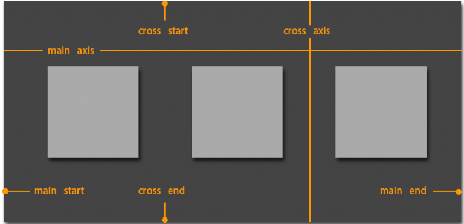
容器默认存在两根主轴：水平方向主轴(main axis)和垂直方向交叉轴(cross axis)，默认项目按主轴排列。
- main start/main end：主轴开始位置/结束位置；
- cross start/cross end：交叉轴开始位置/结束位置；
- main size/cross size：单个项目占据主轴/交叉轴的空间；
二、属性
- flex-direction
- flex-wrap
- flex-flow
- justify-content
- align-item
- align-content
1） flex-direction属性：决定主轴的方向（即项目的排列方向）
1 | .box { |
- row（默认）：主轴水平方向，起点在左端；
- row-reverse：主轴水平方向，起点在右端；
- column：主轴垂直方向，起点在上边沿；
- column-reserve：主轴垂直方向，起点在下边沿。
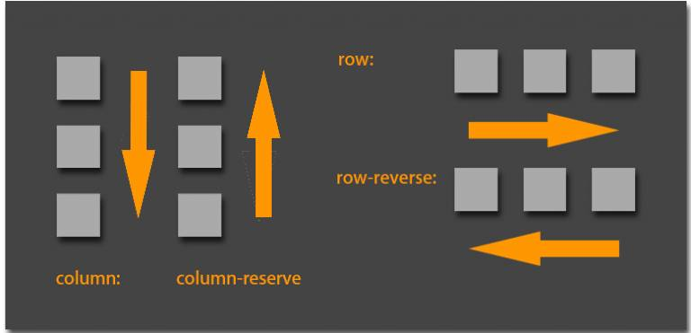
2） flex-wrap属性：定义换行情况
默认情况项目都排列在一条轴线上，但有可能一条轴线排不下。
1 | .box{ |
- nowrap（默认）：不换行

- wrap：换行，第一行在上方
- wrap-reverse：换行，第一行在下方
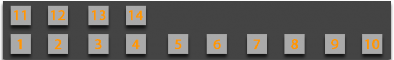
3） flex-flow ： flex-direction 和 flex-wrap 属性的复合属性
1 | .box { |
4） justify-content ： 定义了项目在主轴上的对齐方式
1 | .box { |
- flex-start（默认值）：左对齐
- flex-end：右对齐
- center： 居中
- space-between：两端对齐，项目之间的间隔都相等
- space-around：每个项目两侧的间隔相等。所以，项目之间的间隔比项目与边框的间隔大一倍

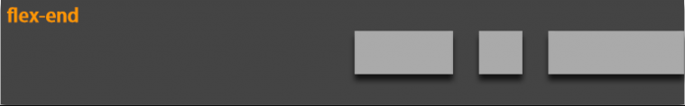
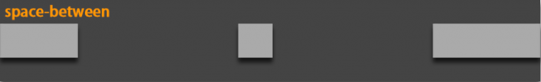
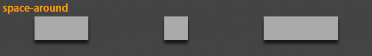
5） align-items : 定义项目在交叉轴上如何对齐
1 | .box { |
- flex-start：交叉轴的起点对齐
- flex-end：交叉轴的终点对齐
- center：交叉轴的中点对齐
- baseline: 项目的第一行文字的基线对齐
- stretch（默认值）：如果项目未设置高度或设为auto，将占满整个容器的高度
align-items:flex-start
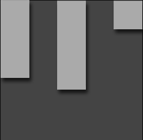
align-items:flex-end
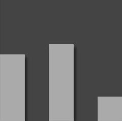
align-items:baseline
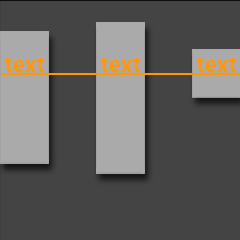
align-items:center
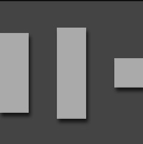
align-items:stretch
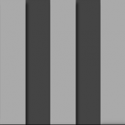
6） align-content : 定义了多根轴线的对齐方式。如果项目只有一根轴线，该属性不起作用
- flex-start：与交叉轴的起点对齐
- flex-end：与交叉轴的终点对齐
- center：与交叉轴的中点对齐
- space-between：与交叉轴两端对齐，轴线之间的间隔平均分布
- space-around：每根轴线两侧的间隔都相等。所以，轴线之间的间隔比轴线与边框的间隔大一倍
- stretch（默认值）：轴线占满整个交叉轴
align-content:flex-start
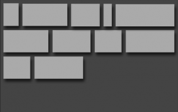
align-content:flex-end
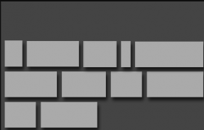
align-content:center
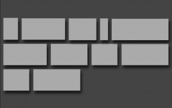
align-content:space-between
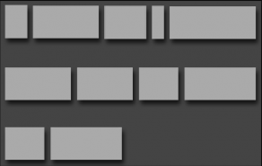
align-content:space-around
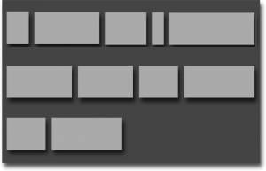
align-content:stretch
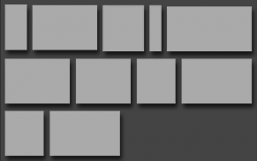
三、项目属性
以下6个属性设置在项目上
- order
- flex-grow
- flex-shrink
- flex-basis
- flex
- align-self
1）order
定义项目的排列顺序。数值越小，排列越靠前，默认为0
1 | .item { |
2） flex-grow
定义项目的放大比例，默认为0，即如果存在剩余空间，也不放大
1 | .item { |
1 | 如果所有项目的flex-grow属性都为1，则它们将等分 |
3） flex-shrink
定义了项目的缩小比例，默认为1，即如果空间不足，该项目将缩小
1 | .item { |
如果所有项目的flex-shrink属性都为1，当空间不足时，都将等比例缩小。如果一个项目的flex-shrink属性为0，其他项目都为1，则空间不足时，前者不缩小。
负值对该属性无效。
4） flex-basis
定义了在分配多余空间之前，项目占据的主轴空间（main size）。浏览器根据这个属性，计算主轴是否有多余空间。它的默认值为auto，即项目的本来大小
1 | .item { |
它可以设为跟width或height属性一样的值（比如350px），则项目将占据固定空间
5） flex
是flex-grow, flex-shrink 和 flex-basis的简写，默认值为0 1 auto。后两个属性可选
1 | .item { |
该属性有两个快捷值：auto (1 1 auto) 和 none (0 0 auto)。
建议优先使用这个属性，而不是单独写三个分离的属性，因为浏览器会推算相关值
6） align-self
允许单个项目有与其他项目不一样的对齐方式，可覆盖align-items属性。默认值为auto，表示继承父元素的align-items属性，如果没有父元素，则等同于stretch
1 | .item { |
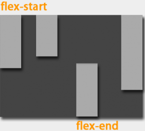
该属性可能取6个值，除了auto，其他都与
align-items属性完全一致
JS 向DOM中添加元素内容 - insertAdjacentHTML
一直是向dom中追加元素的操作就是,createElement 、appendChild等, 知道发现了更加灵活、方便的 insertAdjacentHTML
功能
insertAdjacentHTML() 可以将文本解析成 Element 元素，并将结果节点追加到DOM树指定位置，它不会重新解析它正在使用的元素，因此它不会破坏元素内的现有元素。这避免了额外的序列化步骤，使其比直接使用innerHTML操作更快
语法
element.insertAdjacentHTML(position, text);
position是指添加到哪个位置 ，并且必须是以下字符串之一：
- beforebegin: 元素自身的前面
- afterbegin: 插入元素内部的第一个子节点之前
- beforeend: 插入元素内部的最后一个子节点之后
- afterend: 元素自身的后面
text是要被解析为HTML或XML元素，并插入到DOM树中的字符串
示例及效果图
1 |
|
效果图：